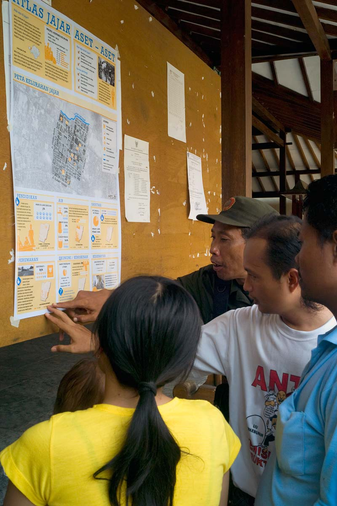

Solo Kota Kita
Surakarta (Solo), Central Java, Indonesia
In 2010 Kota Kita began working with then-Mayor Joko Widodo and local leaders in Solo to collect data about the city’s many neighborhoods. Data about everything from access to water, sanitation, poverty levels, and the number of children enrolled in school were collected from different neighborhoods and represented in mini-atlases to provide a resource for musrenbang, the annual participatory budgeting forum held by residents. This process supports evidence-based advocacy for improving public services, tailoring urban planning decisions to the community while encouraging data interpretation skills and self-representation.
Participatory mapping creates visual and data-based materials that can serve as a reference for all stakeholders involved in public services and community projects. Such evidence is especially useful given Indonesia’s musrenbang, wherein neighborhood members discuss short-term development priorities, passing their decisions along to the government planning and budgeting department (BAPPEDA) before a budget is devised. This bottom-up process was introduced to replace top-down centralized governance.
Having residents collaborate in the collection and discussion of data, with their intimate knowledge of their own needs, is proving a successful way to ensure governments are serving the interests of their communities. This is especially relevant in Solo, where countless cottage industries cluster in distinctive neighborhoods and share resources. Because the city lacks the accessible natural resources on which many mid-sized Indonesian cities subsist, small-scale production and livelihood at the neighborhood level is integral to Solo’s local economy. Kota Kita’s collection and analysis of real data boosts the benefits of these neighborhood musrenbang processes.
Our team conducted interviews, compiled field observations, and created the main tool of the project: poster, or “mini-atlas,” that shows how neighborhoods work and illustrates patterns of social and economic problems and opportunities. With the support of then-Mayor Joko Widodo, now the president of Indonesia, our initial effort in seven neighborhoods was expanded to include the surveying and mapping of all 51 neighborhoods in Solo in 2010. In that year, with the support of BAPPEDA, the mini-atlases were introduced into the musrenbang process.
We conducted the survey again in 2012 to update the database, this time using a new SMS tool that allows residents to send data to the team via mobile phone. Our team also conducted five workshops with local government and trained 70 musrenbang facilitators.
In addition, over 70,000 people have accessed the data on the website since it was launched in 2010. While about 70 percent of these users have come from Indonesia, the site has been visited by residents of 146 other countries.
The team has also worked with local governments and NGOs to apply the survey methodology in several other Indonesian cities, including Banjarmasin, Makassar, Padang, and Pekalongan. The core project was working with an interdisciplinary team to interpret and communicate urban patterns and potential futures in these three cities in a way that is user-friendly for government officials and the wider public alike. Making decisions based on information from residents themselves can lead to a stronger connection between what residents want and need, and can influence positively how local government invests in neighborhoods.


